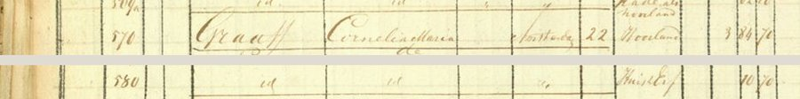

Waar de familie woonde, en waar ze gedoopt werden en trouwden. Bijna vijfhonderd jaar lang in een klein
gebied langs de Lek. Alle plaatsen staan ook op de kaart.
Dit is het eerste huis van de familie dat we precies kunnen aanwijzen. In 1832 maakte de overheid voor het eerst
een kadaster: een kaart van elk stuk grond in Nederland, met de naam van de eigenaar. In het register van Jaarsveld
staat bij de percelen 138 tot 157 van sectie A: Oosterum, H.Z. Teunis, schipper, Jaarsveld. Dat is Teunis
Huijbertszoon van Oostrum (1762–1830). Hij was in 1830 al overleden, maar het kadaster liep een paar jaar achter.
"138 – Oosterum – H.Z. Teunis – schipper – Jaarsveld – [artikel] 105." Daaronder steeds "id." (hetzelfde):
boomgaard, weiland. Onderaan, een paar regels verder, nummer 149: "huis, schuur, berg en plaats". Kadaster 1832,
Oorspronkelijk Aanwijzende Tafel Jaarsveld, sectie A, blad 5 (via HisGIS).
Perceel 149 is het erf met het huis, de schuur en een hooiberg. Het lag aan de Enge IJssel, het smalle
riviertje langs de weg van Lopikerkapel naar Jaarsveld. Vandaar liep het land in lange smalle stroken naar het
zuiden, tot aan de Lekdijk. Aan de overkant van de dijk had Teunis nog stukken hooiland in de uiterwaarden, tot in
de rivier.
De percelen van Teunis in 1832, getekend op een luchtfoto van nu. Rood: het erf met huis, schuur en
hooiberg (perceel 149), aan de Enge IJssel. Geel: zijn land, tot over de Lekdijk en in de uiterwaarden van de Lek
(rechtsonder). Perceelgrenzen 1832: HisGIS; luchtfoto:
Beeldmateriaal Nederland / PDOK, CC BY 4.0.
Na de dood van Teunis en Geertje, in augustus 1830, moesten hun kinderen aan de belastingdienst opgeven wat er
geërfd werd. Die memorie van successie beschrijft de boerderij:
"Dat tot zijne nalatenschap behooren de navolgende vaste goederen, te weten: de helft in: eene
bouwmanswoning, bestaande in een huis, berg en schuur, geteekend N° 7, met zeven bunders drie en zeventig roeden
vijftig ellen bouw-, wei-, hooi- en boomgaardland, staande en gelegen onder Jaarsvelderkapel, gemeente Jaarsveld,
strekkende voor uit het waterschap den Engen IJssel tot achter aan den hoogen Lekdijk." Memorie van successie,
kantoor IJsselstein, 10 november 1830 (Het Utrechts Archief 337-10, inv. 7, nr. 84).
Bij de boerderij hoorde 7,7 hectare land. Daarnaast bezat het echtpaar 1,4 hectare uiterwaard "tot in de diepte
van de Lek", nog 2,8 hectare uiterwaard verderop, en een tweede huis (nummer 9) met 2,1 hectare land in Lopik.
Samen zo'n 14 hectare. Teunis was dus niet alleen schipper, maar ook een boer met eigen grond.
Het erf ligt aan het huidige Kapelsepad in Lopikerkapel. Op het perceel staan nu nieuwe huizen. De oude boerderij met puntgevel er direct naast was in 1832 van iemand
anders (perceel 131, eigenaar Gerrit Spruitenburg).
Wie de boerderij vóór Teunis had, is nog niet uitgezocht. Zijn vader Huijbert woonde in 1771 "in Jaarsveld" en
werd in 1792 begraven als "onder Jaarsvelder Capel", dus in dezelfde buurt.
Bronnen: kadaster 1832 (OAT Jaarsveld, sectie A, artikel 105); memories van successie van Teunis
Oosterom en Geertje Dekker, IJsselstein 1830 (nr. 73 en 84).
De hofstede aan de Zuidzijde, Zuid-Polsbroek
1830 – 1893 · Arie Oosterom en Elisabeth Kooiman, en hun kinderen
Arie, de zoon van Teunis, trouwde in juni 1830 in Willige Langerak en ging boeren in Zuid-Polsbroek.
Eerst als huurder. In januari 1839 stond in de Utrechtsche Courant een advertentie: notaris De Balbian van Doorn in
Jutphaas ging een hofstede verkopen, en wie die wilde bekijken, moest zich melden bij "den Huurder A. Oosterom".
"Eene HOFSTEDE met WOONHUIS, ZOMERHUIS, STALLING, BRAAKHUT, HOOIBERG en ruim 28 Bunders vruchtbare
LANDERIJEN, gelegen onder Zuid-Polsbroek, Sectie A. No. 570 tot en met 607 en 641 tot en met 655. (…) Ter
bezigtiging dier goederen vervoege men zich bij den Huurder A. OOSTEROM, te Zuid-Polsbroek." Utrechtsche
Courant, 28 januari 1839 (Delpher).
Arie kocht de hofstede zelf, bij akte van 2 mei 1839. In het kadaster van 1832 staat als eigenaar van deze
percelen nog Cornelia Maria de Graaff uit Amsterdam: de familie De Graeff, die eeuwenlang heer van
Zuid-Polsbroek was. De zoon van een schipper kocht dus een boerderij van de oude heren van het dorp.

"570 – Graaff, Cornelia Maria de – Amsterdam – hooiland" en, verderop, "580 – id. – huis en erf".
Kadaster 1832, Oorspronkelijk Aanwijzende Tafel Zuid-Polsbroek, sectie A, blad 20 (via HisGIS).De hofstede van 1839 op een luchtfoto van nu. Rood: huis en erf (perceel 580), aan de Zuidzijdseweg.
Geel: het land, in lange stroken van ruim twee kilometer. Perceelgrenzen 1832: HisGIS;
luchtfoto: Beeldmateriaal Nederland / PDOK, CC BY 4.0.
Het erf ligt aan de huidige Zuidzijdseweg 142 in Polsbroek. Er staat nu een boerderij met een rieten dak.
Volgens het kadaster van nu is dat huis in 1888 gebouwd, toen de familie Oosterom hier waarschijnlijk nog eigenaar
was.
Arie werd een welgestelde boer. In zijn testament van januari 1881 noemt hij vier boerderijen in
Polsbroek, twee aan de Noordzijde en twee aan de Zuidzijde. Zoon Hendrik woonde op de ene, zoon Teunis op een
andere; Teunis zou de boerderij "aan de Zuidzijde 48" krijgen. Arie overleed in
augustus 1881. Na de dood van Elisabeth, in 1893, werden twee boerderijen geveild in het koffiehuis van de weduwe
Zuidervliet in Polsbroek. Ze brachten f 16.600 en f 29.000 op.
Teunis (1847–1915) bleef boer in Polsbroek. In 1879 zat hij in het bestuur van de armenzorg van het dorp, de
"Algemene Gereformeerde of Grote Armen van Polsbroek". Hij woonde in 1875 in huis nummer 33. Welke boerderij dat
was, zoeken we nog uit.
Bronnen: Utrechtsche Courant 28-1-1839 en 1-3-1839; kadaster 1832 (OAT Zuid-Polsbroek, sectie A);
notariële akten (RHC Rijnstreek en Lopikerwaard): testamenten Arie Oosterom en Elisabeth Kooiman 4-1-1881
(IJsselstein), hypotheek 1-9-1880, boedel en veiling 1893 (Lopik); Utrechtsch Provinciaal en Stedelijk Dagblad
6 en 26 september 1893; Het nieuwe dagblad voor Utrecht 6-10-1893; hypotheek Armen van Polsbroek 27-5-1879
(Oudewater).
Stolwijk, Bergambacht en Langerak
1909 – 1959 · Pieter Oosterom en Willempje Lekkerkerker
De kerk van Bergambacht. Foto: Sailko,
Wikimedia Commons, CC BY 3.0.
Pieter en Willempje vertrokken in januari 1909 met hun zoontje Arie uit Polsbroek. Ze woonden heel even in
Stolwijk en vestigden zich nog in hetzelfde jaar in Bergambacht, over de Lek in de Krimpenerwaard. In het
bevolkingsregister staat Pieter als landbouwer aan de Hogedijk (toen nummer 149). In april 1925 verhuisde het
gezin naar Langerak. Pieter overleed in 1959 in Bergambacht.
Bronnen: bevolkingsregisters Stolwijk 1906–1924 en Bergambacht 1893–1937 (Streekarchief
Midden-Holland).
Oudere plekken
Jaarsveld aan de Lek, ets van Jan van Almeloveen (eind 17e eeuw).
Statens Museum for Kunst, publiek domein.
Jaarsveld en het goed Oversloot. De Smetsers, de voorouders van de Oosteroms, woonden al in de 16e eeuw
bij Jaarsveld. Rond 1580 huurde Cornelis Ariensz Smetser het goed Oversloot in het gerecht Jaarsveld, van
jonkheer Carel Steur. Waar dat goed lag, zoeken we nog uit.
De Lek. Van Aryen Smetser (ca. 1540) tot Arie Oosterom (1801) waren de mannen van de familie schipper op
de rivier. Jan Ariensz heette zelfs "Jan Ariens Schipper".
Montfoort. Annetje van Oostrum Smetser (1622) trouwde in 1649 in Montfoort met Hendrick Jacobs Speyert,
burgemeester van het stadje.
Portengen en Ter Aa. Arie van Oostrum (1756–1841), een broer van Teunis, trok naar Portengen, ten noorden
van Utrecht. Van hem stammen de Van Oosteroms uit die streek af.
Bronnen: famkroon.nl; vanoostrum.info.
De kerken
Lopikerkapel
1622 – 1808 · dopen, trouwen en begraven
Lopikerkapel met het kerkje. Foto: Jan Dijkstra,
Wikimedia Commons, CC BY-SA 4.0.
Het kerkje stond nog geen kilometer van de boerderij aan de Enge IJssel. Bijna twee eeuwen lang werden de Van
Oostrums hier gedoopt, getrouwd en begraven. Jan Ariensz werd in 1753 in de kerk begraven, zijn zoon Huijbert in 1792
in een gehuurd graf. Voor Huijbert luidde twee uur lang de klok, die Gerhart Schimmel in 1682 goot en die er nog
hangt.
Er stond al in 1327 een kapel. Rond 1450 werd de kerk opnieuw gebouwd; vanaf 1605 was ze protestants. Tussen 1828
en 1832 werd ze gerestaureerd door aannemer Roeloff Benschop, waarschijnlijk een kleinzoon van Huijbert.
Bronnen: Wikipedia, Hervormde kerk (Lopikerkapel); doop-, trouw- en begraafboeken Lopikerkapel.
Willige Langerak
1830 · de bruiloft van de laatste schipper
De kerk van Willige Langerak in 1840. Foto: Gerard Dukker,
RCE / Wikimedia Commons, CC BY-SA 4.0.
Hier trouwde schipper Arie Oosterom in juni 1830 met Elisabeth Kooiman, dochter van een boer. Twee maanden later
stierven zijn ouders.